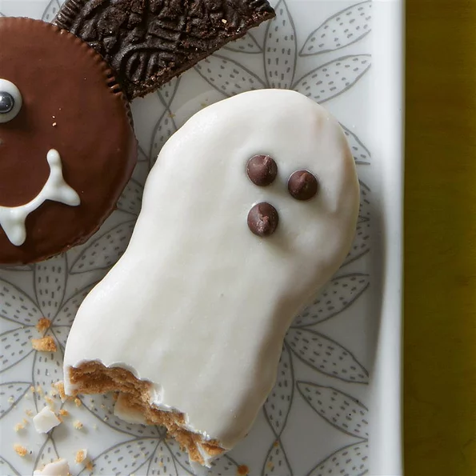

Ghosties

Halloween Dessert With Peanut Butter Sandwhich
Three ingredients are all you need for this fun and very quick way to make something for your school-age child's class party or home Halloween party!
Ingredients
- 1 (12 ounce) package white chocolate chips, or as needed
- 24 peanut-shaped peanut butter sandwhich cookies
- 48 miniature chocolate chips/li>
Steps
- Place chocolate chips into a microwave-safe bowl and heat on low in microwave for 1 minute; stir. Continue heating on low several more times, 30 seconds at a time, stirring after each time, until white chocolate is warm and smooth.
- Use 2 forks to dip cookies into white chocolate; set cookies on sheets of waxed paper. Place 2 miniature chocolate chips onto one end of each cookie for eyes; set cookies aside until coating has hardened, about 20 minutes.